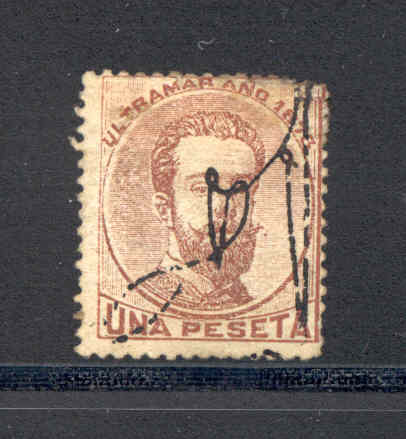
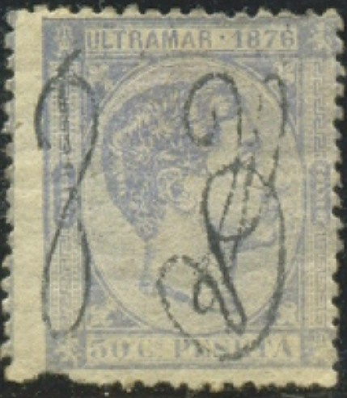

{kind=link}

Portoriko
Return To Catalogue - Puerto Rico, part 2 - Puerto Rico, part 3 - Coamo
Note: on my website many of the
pictures can not be seen! They are of course present in the
catalogue;
contact me if you want to purchase the catalogue.
Puerto Rico was a Spanish colony. The first stamps of Puerto Rico consist of overprints on stamps of Cuba. These overprints became necessary due to the difference in currency between Cuba and Puerto Rico. The overprints were applied to prevent stamps from Cuba being used in Puerto Rico. The overprints signify the signatures of General Lauriano Sanz (left) and minister of finance Antonio Belmonte (right). Puerto Rico became possession of the United States in 1898. Major cities are San Juan, Ponce and Mayaguez.
25 c grey 50 c brown 1 P brown
Value of the stamps |
|||
vc = very common c = common * = not so common ** = uncommon |
*** = very uncommon R = rare RR = very rare RRR = extremely rare |
||
| Value | Unused | Used | Remarks |
| 25 c | R | ** | |
| 50 c | RR | *** | |
| 1 P | RR | R | |
I've seen a double overprint on the 25 c value.
25 c with double overprint
At least the forger Fournier is known to have made forged overprints.

25 c blue
Value of the stamps |
|||
vc = very common c = common * = not so common ** = uncommon |
*** = very uncommon R = rare RR = very rare RRR = extremely rare |
||
| Value | Unused | Used | Remarks |
| 25 c | R | ** | |
25 c blue 50 c green 1 P brown
Value of the stamps |
|||
vc = very common c = common * = not so common ** = uncommon |
*** = very uncommon R = rare RR = very rare RRR = extremely rare |
||
| Value | Unused | Used | Remarks |
| 25 c | R | ** | |
| 50 c | R | *** | |
| 1 P | RR | R | |
Typical cancel, ellipse with stars.
Type II overprint
Type I overprint
25 c grey 50 c blue 1 P black
The 25 c and 1 P exist with two types of overprint. In type I, the two parts of the overprint are not connected. In type II, there is a connection between the left and the right part of the overprint. The 50 c value was only issued in Type I.
Value of the stamps |
|||
vc = very common c = common * = not so common ** = uncommon |
*** = very uncommon R = rare RR = very rare RRR = extremely rare |
||
| Value | Unused | Used | Remarks |
| 25 c | ** | * | Two types of overprint exist |
| 50 c | *** | *** | |
| 1 P | R | R | Two types of overprint exist |
I've seen double and inverted overprints of the 25 c value. I've also seen the 50 c with inverted overprint and the 1 P with double overprint.
25 c stamps with double (left) and inverted (right) overprint
Forged overprints exist, example:

Forged overprints
Page of a Fournier Album with forged stamps, cancels and
overprints. At the bottom the forged signatures as used by
Fournier.
{kind=link}